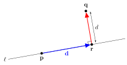
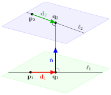
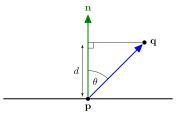

Shortest distance problems
Contents
Shortest distance problems#
Another type of problem encountered in computer graphics are the determination of the shortest distance between objects. Here we look at some common shortest distance problems and how the use of vectors simplifies the solution of these.
Shortest distance between two points#
In \(\mathbb{R}^n\) the shortest distance, \(d\), between two points \(\mathbf{p}\) and \(\mathbf{q}\) is the length of a straight line segment connecting them. If we think about this segment as of a vector, then
where \(\mathbf{p} = (p_1,p_2,\dots,p_n)\) and \(\mathbf{q} = (q_1,q_2,\dots,q_n)\).
Shortest distance between a line and a point#
Given a line defined by the vector equation \(\mathbf{p} + t \mathbf{d}\) and a point \(\mathbf{q}\) in \(\mathbb{R}^n\) what is the shortest distance between the point and the line?
{kind=link}

Fig. 27 The shortest distance between a point \(\mathbf{q}\) and a line \(\mathbf{p} + t \mathbf{d}\).#
Let \(\mathbf{r}\) be a point on the line such that the vector \(\mathbf{q} - \mathbf{r}\) is perpendicular to \(\mathbf{d}\) (Fig. 27) then \(\mathbf{r}\) is the closest point along the line to \(\mathbf{q}\), therefore
Substituting \(\mathbf{r} = \mathbf{p} + t\mathbf{d}\) into equation (13) and rearranging to make \(t\) the subject gives
This gives the value of the parameter \(t\) that can be used to calculate the co-ordinates of the point \(\mathbf{r}\) and therefore the shortest distance between the point \(\mathbf{q}\) and the line \(\mathbf{p} + t\mathbf{d}\) is \(|\mathbf{q} - \mathbf{r}|\).
Theorem 3 (The shortest distance between a point and a line)
The shortest distance between the point \(\mathbf{q}\) and a line that passes through the point \(\mathbf{p}\) in the direction \(\mathbf{d}\) is \(|\mathbf{q} - \mathbf{r}|\) where \(\mathbf{r} = \mathbf{p} + t\mathbf{d}\) and
Example 16
Find the shortest distance between the point \((2,2,2)\) and the line \((0, -2, 1) + t(1, 1, 1)\).
Solution
Here \(\mathbf{q} = (2, 2, 2)\), \(\mathbf{p} = (0, -2, 1)\) and \(\mathbf{d} = (1, 1, 1)\). Using equation (13)
So the point on the line which is closest to \(\mathbf{q}\) is
and the shortest distance is \(|\mathbf{q} - \mathbf{r}|\) so
Shortest distance between two lines#
Given two lines with vector equations \(\mathbf{p}_1 + t\mathbf{d}_1\) and \(\mathbf{p}_2 + t\mathbf{d}_2\), what is the shortest distance between the two lines. Here we have three situations to consider
If the two lines intersect then obviously the shortest distance is obviously 0.
If the two lines are parallel then any point on \(\ell_1\) can gives the shortest distance between \(\ell_1\) and \(\ell_2\). Hence we simply choose a point \(\mathbf{r}\) on one of the lines and apply method for finding the distance between a point and a line (Theorem 3).
If the two lines are skew then the shortest distance is the distance of the chord that is perpendicular to both of the lines (Fig. 28).
{kind=link}

Fig. 28 The shortest distance between skew lines is the distance of the chord which is perpendicular to both lines.#
If \(\mathbf{q}_1\) and \(\mathbf{q}_2\) are points on the two lines then the chord \(\mathbf{q}_1 \to \mathbf{q}_2\) is perpendicular to both lines and has the direction vector \(\mathbf{n} = \mathbf{d}_1 \times \mathbf{d}_2\). If \(d\) is the distance between \(\mathbf{q}_1\) and \(\mathbf{q}_2\) then
Let \(\hat{\mathbf{n}} = \dfrac{\mathbf{d}_1 \times \mathbf{d}_2}{|\mathbf{d}_1 \times \mathbf{d}_2|}\) and substituting the equations of \(\mathbf{q}_1\) and \(\mathbf{q}_2\) equation (15) gives
Since \(\mathbf{n}\) is perpendicular to both lines then \(\mathbf{d}_1 \cdot \mathbf{n} = \mathbf{d}_2 \cdot \mathbf{n} = 0\) and \(\hat{\mathbf{n}} \cdot \hat{\mathbf{n}} = 1\) then
which simplifies to
Theorem 4 (The shortest distance between two skew lines)
The shortest distance between two skew lines \(\mathbf{q}_1 = \mathbf{p}_1 + t \mathbf{d}_1\) and \(\mathbf{q}_2 = \mathbf{p}_2 + t \mathbf{d}_2\) is
where \(\mathbf{n} = \dfrac{\mathbf{d}_1 \times \mathbf{d}_2}{|\mathbf{d}_1 \times \mathbf{d}_2|}\).
Example 17
Find the shortest distance between the two lines \((0, 1, 3) + t(1, 4, 2)\) and \((1, 1, 3) + t(0, 2, 4)\).
Solution
Let \(\mathbf{p}_1 = (0, 1, 3)\), \(\mathbf{p}_2 = (1, 1, 3)\), \(\mathbf{d}_1 = (1, 4, 2)\) and \(\mathbf{d}_2 = (0, 2, 4)\). First we calculate \(\hat{\mathbf{n}}\)
Note that since \(\mathbf{n}\) is non-zero, these are skew lines. Using equation (16)
Shortest distance between a point and a plane#
The shortest distance between a point \(\mathbf{q}\) and the plane defined by the point \(\mathbf{p}\) and the normal vector \(\mathbf{n}\) is the length of a chord perpendicular to the plane to \(\mathbf{q}\) (Fig. 29).
{kind=link}

Fig. 29 The shortest distance between a point and a plane is the perpendicular distance from the point to the plane.#
The geometric definition of the dot product between the vectors \(\mathbf{q} - \mathbf{p}\) and \(\mathbf{n}\) is
If we consider the right-angled triangle with the hypotenuse \(|\mathbf{q} - \mathbf{p}|\) and adjacent side \(d\) then
which substituted into (17) gives
therefore
Theorem 5
The shortest distance between a point \(\mathbf{q}\) and a plane defined by a point \(\mathbf{p}\) and a unit normal vector \(\hat{\mathbf{n}}\) is
Example 18
A plane is defined by the point \(\mathbf{p} = (1, 1, 3)\) and the normal vector \(\mathbf{n} = (1, -1, 1)\). Calculate the distance from the point \(\mathbf{q} = (4, -3, 2)\) to the plane.
Solution
Normalise the normal vector
therefore